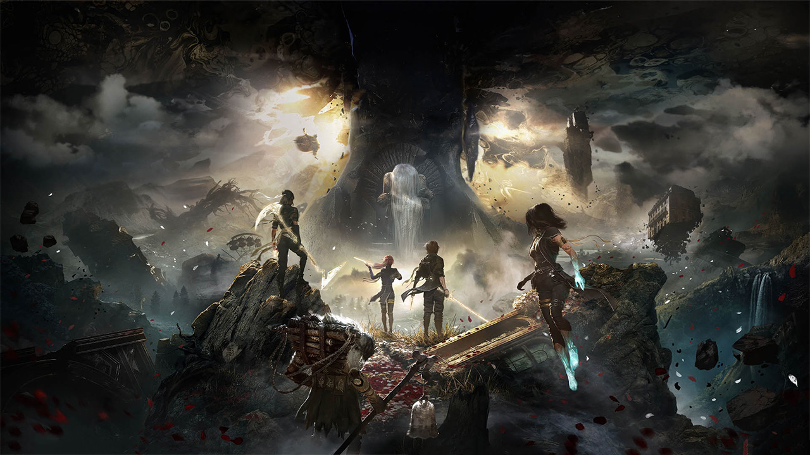

Clair Obscur : Expedition 33
Ma Note

Mon Avis
Un jeu exceptionnel que j’attendais avec impatience depuis la toute première bande-annonce !
Un RPG au tour par tour, mais avec des mécaniques d’esquive et de contre,
ce qui rend le gameplay très dynamique et incroyablement plaisant à jouer !
L’histoire est incroyable, chaque chapitre est meilleur que le précédent.
On avance avec un seul objectif en tête, tuer la Peintresse.
Chaque année, elle peint un nombre sur sa stèle. Si ce nombre correspond à votre âge,
vous mourrez, et d’année en année, le chiffre descend ! au fil de l'histoire
on comprend ce qu'il se passe avec des revelations tous plus folle les une que les autres !
Pour résumé, c'est tout simplement un chef d'oeuvre qu'il faut faire au moins une fois dans sa vie.